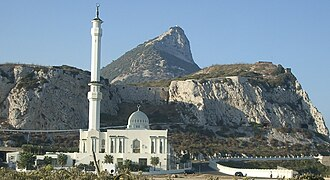

Pagpapakilala
La mosquée Ibrahim-al-Ibrahim, connue également sous les noms de mosquée du roi Fahd ben Abdel Aziz al-Saoud ou mosquée du Gardien des Mosquées saintes, est une mosquée située à l'extrémité sud de Gibraltar, à Europa Point.
مسجد إبراهيم الإبراهيم، المعروف أيضا باسم مسجد الملك فهد بن عبد العزيز آل سعود أو جامع خادم الحرمين الشريفين، هو مسجد في الناحية الجنوبية من جبل طارق، في أوروبا. كان المبنى هدية من الملك فهد عاهل المملكة العربية السعودية، واستغرق عامين لبنائه بتكلفة تبلغ حوالي 5 ملايين جنيه استرليني. وقد تم افتتاحه رسميا يوم 8 أغسطس 1997.
The Ibrahim-al-Ibrahim Mosque, also known as the King Fahd bin Abdulaziz Al Saud Mosque or the Mosque of the Custodian of the Two Holy Mosques, is an Islamic mosque located at Europa Point in the British overseas territory of Gibraltar, a peninsula connected to southern Spain. The mosque faces south towards the Strait of Gibraltar and Morocco, several kilometres (miles) away.
Masjid Ibrahim-al-Ibrahim, juga dikenal sebagai Masjid Raja Fahd bin Abdulaziz al-Saud atau Masjid Penjaga Dua Masjid Suci adalah sebuah masjid di ujung selatan Gibraltar, di Europa Point. Bangunan ini adalah hadiah dari Raja Fahd dari Arab Saudi dan memakan dua tahun untuk membangunnya dengan biaya sekitar £ 5 juta. Diresmikan tanggal 8 Agustus 1997. Sekitar 7% populasi Gibraltar adalah Muslim, dari total 2.000 orang. Komplek masjid juga memiliki sekolah, perpustakaan, dan aula kuliah.
مسجد ابراہیم الإبراہیم ، جسے مسجد شاہ فہد بن عبد العزیز آل سعود یا جامع خادم الحرمین الشریفین کے نام سے بھی جانا جاتا ہے، یورپ میں واقع جبل الطارق کے جنوبی جانب ایک مسجد ہے۔ یہ عمارت سعودی عرب کے بادشاہ فہد کی طرف سے ایک تحفہ تھی، جس کی تعمیر پر تقریباً 50 لاکھ پاؤنڈ اسٹرلنگ لاگت آئی اور اسے مکمل ہونے میں دو سال لگے۔ اس کا باقاعدہ افتتاح 8 اگست 1997 کو کیا گیا۔
Die Ibrahim-al-Ibrahim-Moschee ist eine Moschee an der südlichen Spitze von Gibraltar, am Europa Point. Sie liegt am Fuße des Affenfelsens.
La Mezquita Ibrahim al-Ibrahim, también conocida como la Mezquita del Rey Fahd bin Abdulaziz Al Saúd o Mezquita del Guardián de las Dos Mezquitas Sagradas, es una mezquita situada en la Punta de Europa, en el extremo meridional de Gibraltar. El edificio fue un regalo de rey Fahd de Arabia Saudí y su construcción duró dos años, con un coste de alrededor de cinco millones de libras. Fue inaugurada oficialmente el 8 de agosto de 1997.
La moschea Ibrahim-al-Ibrahim, conosciuta anche come moschea di Fahd bin Abdulaziz al-Saud o moschea dei Custodi delle Sante Moschee è una moschea nella punta meridionale di Gibilterra sull'Europa Point. La moschea è stata costruita grazie ai finanziamenti di re Fahd dell'Arabia Saudita e per costruirla ci sono voluti due anni al costo di circa 5 milioni di sterline. È stata inaugurata ufficialmente l'8 agosto 1997. La moschea serve per il 7% dei gibilterrini di religione musulmana che sono circa 2.000 provenienti soprattutto dal vicino Marocco. La moschea è costituita da un complesso che ha una scuola bilingue inglese-arabo, libreria e sala di lettura.
A Mesquita Ibrahim-al-Ibrahim, também conhecida como Mesquita do Rei Fahd bin Abdulaziz al-Saud ou Mesquita do Guardião das Duas Mesquitas Sagradas, é uma mesquita situada na Ponta da Europa, no extremo meridional de Gibraltar.
De Ibrahim-al-Ibrahim-moskee, ook bekend als de King Fahd bin Abdulaziz al-Saud-moskee of de moskee van de bewaarder van de twee heilige moskeeën, is een moskee op Europa Point in het Britse overzeese gebied Gibraltar.
इब्राहिम-अल-इब्राहिम मस्जिद, जिसे किंग फहद बिन अब्दुलअजीज अल-सऊद मस्जिद या मोस्क ऑफ़ द कस्टोडियन ऑफ़ द टू होली मोस्क्स के नामों से भी जाना जाता है, ब्रिटिश प्रवासी शासित प्रदेश जिब्राल्टर में स्थित एक मस्जिद है। यह मस्जिद क्षेत्र के दक्षिणी सिरे पर यूरोपा पॉईंट पर स्थित है। मस्जिद का मुख जिब्राल्टर जलसन्धि और अफ़्रीकी राष्ट्र मोरक्को की तरफ़ है, जो यहाँ से केवल कुछ ही किलोमीटर की दूरी पर है।
Мечеть Ибрагим аль-Ибрагим или Мечеть короля Фахда ибн Абдель Азиз Аль Сауда или Мечеть Хранителя Двух Святых Мечетей — мечеть в южной части Гибралтара. Здание было подарком от короля Саудовской Аравии Фахда и его строительство заняло два года, и стоило приблизительно 5 миллионов £. 8 августа 1997 года она была официально открыта.
มัสยิดอิบรอฮีม อัลอิบรอฮีม มีอีกชื่อว่า มัสยิดสมเด็จพระราชาธิบดีฟะฮัด บิน อับดุลอะซีซ อาล ซะอูด หรือ มัสยิดผู้อารักขามัสยิดศักดิ์สิทธิ์ทั้งสอง เป็นมัสยิดบริเวณยูโรปาพอยต์ในยิบรอลตาร์ คาบสมุทรที่เชื่อมสเปนตอนใต้ ซึ่งเป็นดินแดนโพ้นทะเลของบริเตน มัสยิดหันทางใต้ไปยังช่องแคบยิบรอลตาร์และประเทศโมร็อกโกหลายกิโลเมตร
Ibrahim-al-Ibrahim Mosque, även känd som King Fahd bin Abdulaziz al-Saud Mosque och Mosque of the Custodian of the Two Holy Mosques är en moské i Gibraltar. Den ligger vid Gibraltars sydligaste punkt, Europa Point. Moskén är en gåva från Saudiarabiens kung Fahd bin Abdul Aziz. Den invigdes 8 augusti 1997. Det är en av de största moskéerna i ett icke-muslimskt land.Den här artikeln är helt eller delvis baserad på material från engelskspråkiga Wikipedia, Ibrahim-al-Ibrahim Mosque, 5 december 2016.
Sa mapa
Mga dokumento at link
- Wikipédia — Français
- Wikipédia — العربية
- Wikipédia — English
- Wikipédia — Bahasa Indonesia
- Wikipédia — اردو
- Wikipédia — Deutsch
- Wikipédia — Español
- Wikipédia — Italiano
- Wikipédia — Português
- Wikipédia — Nederlands
- Wikipédia — 中文
- Wikipédia — हिन्दी
- Wikipédia — Русский
- Wikipédia — ไทย
- Wikipédia — Svenska
- Wikidata — Q1356809
Datos: Wikidata (CC0), ina-update tuwing 3 buwan. Ang taon ay ang pinakamaagang alam na petsa ng pagkakatayo ng gusali: para sa gusaling naging moske kalaunan (gaya ng Hagia Sophia), ito ang taon ng orihinal na gusali. Mga larawan: Wikimedia Commons, ang may-akda at lisensiya ay nasa pahina ng bawat larawan.